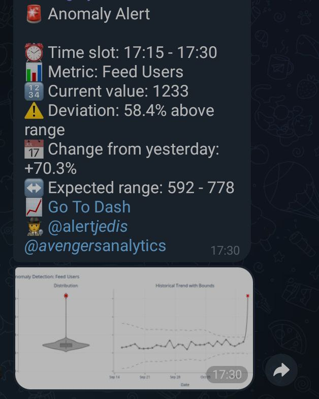
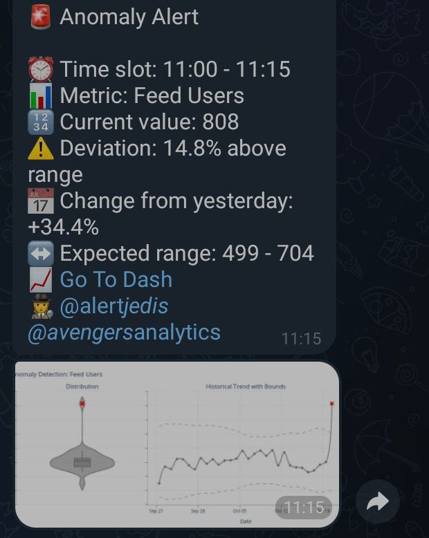

7. Alert System#
Context:
To proactively identify issues before they impact users, we need a system that continuously monitors key product metrics and alerts the team about anomalies.
This project implements an automated alert system that checks critical metrics every 15 minutes and sends immediate notifications when deviations are detected.
Objectives:
To build a robust anomaly detection system that monitors key product metrics in real-time, automatically alerts the team via Telegram when anomalies occur, and provides actionable insights for rapid investigation.
Data Sources:
feed_actions- News feed activitymessage_actions- Messaging activity
Key Achievements:
SQL Queries Developed:
Created optimized queries to extract and calculate key metrics from ClickHouse database
Airflow DAG Implemented:
Built automated pipeline for continuous 15-minute monitoring and alert generation
Anomaly Detection Engine:
Successfully implemented MAD-based statistical method for identifying metric deviations
Configurable System:
Built flexible detection with adjustable sensitivity thresholds
Real-time Monitoring:
Established 24/7 tracking of feed and messenger metrics (DAU, views, likes, CTR, messages)
Automated Alert System:
Deployed Telegram integration for immediate notification delivery
Business Impact:
Established proactive monitoring system that enables rapid response to critical issues before they escalate to affect user experience.
7.1 Data Description#
In the product database on ClickHouse, the data is stored in the following tables
Table feed_actions
Field |
Description |
|---|---|
user_id |
User ID |
post_id |
Post ID |
action |
Action: view or like |
time |
Timestamp |
gender |
User’s gender |
age |
User’s age (1 = Male) |
os |
User’s OS |
source |
Traffic source |
country |
User’s country |
city |
User’s city |
exp_group |
A/B test group |
Table message_actions
Field |
Description |
|---|---|
user_id |
Sender’s ID |
receiver_id |
Receiver’s ID |
time |
Send timestamp |
gender |
Sender’s gender |
age |
Sender’s age (1 = Male) |
os |
Sender’s OS |
source |
Sender’s traffic source |
country |
Sender’s country |
city |
Sender’s city |
exp_group |
Sender’s A/B test group |
7.2 Anomaly Detection Methodology#
Statistical Method:
Median Absolute Deviation (MAD) for robust outlier detection resistant to extreme values
Time-based Sampling:
Uses the same 15-minute interval from each of the previous 30 days (e.g., 14:15-14:30 from each day)
Dynamic Baseline:
For each monitoring cycle, calculates median and MAD from 30 historical same-time-interval data points
Bound Calculation:
Upper and lower bounds derived as: rolling_median ± threshold × (MAD × 1.4826)
Bound Smoothing:
3-point moving average applied to bounds to reduce noise while maintaining sensitivity
Anomaly Trigger:
Current data point is flagged as anomalous when it falls outside the calculated upper or lower bounds
Continuous Adaptation:
Bounds automatically recalculate for each new 15-minute interval using updated 30-day window
7.3 Helper Functions#
Create function for calculate anomaly bounds.
def calculate_anomaly_bounds_mad(
column: pd.Series,
window_size: int = 30,
threshold: float = 3.0,
smooth_bounds: bool = True,
smooth_window: int = 3
) -> pd.DataFrame:
"""
Calculate anomaly bounds using Median Absolute Deviation (MAD) via rolling.
Args:
column: Time series data with datetime index
window_size: Number of previous points for bounds calculation
threshold: MAD multiplier (default: 3.0 ~ 99.7% for normal distribution)
smooth_bounds: Whether to smooth bounds (default: True)
smooth_window: Window size for smoothing (default: 3)
"""
shifted = column.shift(1)
rolling_median = shifted.rolling(window_size).median()
rolling_mad = (
shifted.rolling(window_size)
.apply(lambda x: stats.median_abs_deviation(x, nan_policy="omit"))
)
# Converting MAD to "standard deviation"
mad_std = rolling_mad * 1.4826
lower_bounds = rolling_median - threshold * mad_std
upper_bounds = rolling_median + threshold * mad_std
if smooth_bounds:
lower_bounds = lower_bounds.rolling(window=smooth_window, min_periods=1).mean()
upper_bounds = upper_bounds.rolling(window=smooth_window, min_periods=1).mean()
df_bounds = pd.DataFrame({
'value': column,
'lower_bound': lower_bounds,
'upper_bound': upper_bounds
}, index=column.index)
df_bounds = df_bounds.replace([np.inf, -np.inf], np.nan)
return df_bounds.tail(30)
Create a function to build a chart with a highlighted anomaly.
def create_anomaly_chart(
bounds_df: pd.DataFrame
, metric_name: str
) -> go.Figure:
"""Create subplots for detected anomaly"""
historical_series = bounds_df['value']
current_value = bounds_df['value'].iloc[-1]
lower_bounds = bounds_df['lower_bound']
upper_bounds = bounds_df['upper_bound']
fig = make_subplots(
rows=1, cols=2,
subplot_titles=(
f'Distribution',
f'Historical Trend with Bounds'
)
, horizontal_spacing=0
, column_widths=[0.4, 0.6]
, shared_yaxes=True
)
fig.add_trace(
go.Violin(
y=historical_series.values,
box_visible=True,
meanline_visible=True,
points=False,
name=metric_name,
marker=dict(color='gray'),
),
row=1, col=1
)
fig.add_trace(
go.Scatter(
x=[metric_name], y=[current_value],
mode='markers',
marker=dict(color='red', size=12, symbol='x'),
name='Current Value',
showlegend=False
),
row=1, col=1
)
fig.add_trace(
go.Scatter(
x=historical_series.index,
y=historical_series.values,
mode='lines+markers',
name='Historical data',
line=dict(color='gray', shape='spline'),
marker=dict(size=7)
),
row=1, col=2
)
fig.add_trace(
go.Scatter(
x=upper_bounds.index,
y=upper_bounds.values,
mode='lines',
name='Upper Bound',
line=dict(color='gray', width=1, dash='dash'),
showlegend=False
),
row=1, col=2
)
fig.add_trace(
go.Scatter(
x=lower_bounds.index,
y=lower_bounds.values,
mode='lines',
name='Lower Bound',
line=dict(color='gray', width=1, dash='dash'),
showlegend=False
),
row=1, col=2
)
fig.add_trace(
go.Scatter(
x=[historical_series.index.max()],
y=[current_value],
mode='markers',
marker=dict(color='red', size=10, symbol='x'),
name='Current Value',
showlegend=False
),
row=1, col=2
)
fig.update_layout(
title_text=f"Anomaly Detection: {metric_name}",
height=450,
width=1000,
showlegend=False
)
fig.update_yaxes(title_text=metric_name, row=1, col=1)
fig.update_yaxes(title_text=None, row=1, col=2)
fig.update_xaxes(visible=False, row=1, col=1)
fig.update_xaxes(title='Date', tickformat='%b %d', row=1, col=2)
return fig
7.4 Airflow DAG Implementation#
Complete DAG code for anomalies detection.
from datetime import datetime, timedelta
import pandas as pd
import numpy as np
import plotly.express as px
import plotly.graph_objects as go
from plotly.subplots import make_subplots
from airflow.decorators import dag, task
from airflow.operators.python import get_current_context
from textwrap import dedent
from dotenv import load_dotenv
import sys
import os
import logging
current_dir = os.path.dirname(os.path.abspath(__file__))
env_path = os.path.join(current_dir, '.env')
sys.path.insert(0, current_dir)
from utils_for_dags import (
ChConnector
, TelegramBot
, create_anomaly_chart
, calculate_anomaly_bounds_mad
)
load_dotenv(env_path)
CHAT_ID_ALERT = os.getenv('CHAT_ID_ALERT')
db = ChConnector()
bot = TelegramBot(chat_id=CHAT_ID_ALERT)
# Configure logger
logger = logging.getLogger('alert_system')
logger.setLevel(logging.INFO)
default_args = {
'owner': 'Pavel Grigoryev',
'depends_on_past': False,
'retries': 2,
'retry_delay': timedelta(minutes=5),
'start_date': datetime(2025, 9, 25),
}
dag_config = {
'default_args': default_args,
'description': 'DAG for detecting anomalies and sending report in Telegram',
'schedule_interval': '*/15 * * * *', # Every 15 minutes
'catchup': False,
'tags': ['anomalies'],
'max_active_runs': 1,
}
QUERY = '''
WITH feed_metrics AS (
SELECT
toStartOfFifteenMinutes(time) AS start_of_15min
, uniqExact(user_id) AS users_feed
, countIf(action = 'view') AS views
, countIf(action = 'like') AS likes
, likes / views as ctr
FROM
feed_actions
WHERE
toDate(time) >= toDate(now()) - 59
AND toHour(time) = toHour(now() - INTERVAL 15 MINUTE)
AND toMinute(time) >= toMinute(toStartOfFifteenMinutes(now() - INTERVAL 15 MINUTE))
AND toMinute(time) < toMinute(toStartOfFifteenMinutes(now() - INTERVAL 15 MINUTE)) + 15
GROUP BY
start_of_15min
)
, messenger_metrics AS (
SELECT
toStartOfFifteenMinutes(time) AS start_of_15min
, uniqExact(user_id) AS users_messenger
, count() AS messages
FROM
message_actions
WHERE
toDate(time) >= toDate(now()) - 59
AND toHour(time) = toHour(now() - INTERVAL 15 MINUTE)
AND toMinute(time) >= toMinute(toStartOfFifteenMinutes(now() - INTERVAL 15 MINUTE))
AND toMinute(time) < toMinute(toStartOfFifteenMinutes(now() - INTERVAL 15 MINUTE)) + 15
GROUP BY
start_of_15min
)
SELECT
if(f.start_of_15min != toDate(0), f.start_of_15min, m.start_of_15min) AS start_of_15min
, f.users_feed
, m.users_messenger
, f.views
, f.likes
, f.likes / nullIf(f.views, 0) AS ctr
, m.messages
FROM
feed_metrics f
FULL OUTER JOIN messenger_metrics m ON f.start_of_15min = m.start_of_15min
ORDER BY
start_of_15min
'''
METRIC_CONFIG = {
'users_feed': {
'name': 'Feed Users',
'threshold': 4.5,
'window_size': 30,
'smooth_bounds': True,
'smooth_window': 3,
'format': '{:.0f}',
},
'users_messenger': {
'name': 'Messenger Users',
'threshold': 4.5,
'window_size': 30,
'smooth_bounds': True,
'smooth_window': 3,
'format': '{:.0f}',
},
'views': {
'name': 'Post Views',
'threshold': 4.0,
'window_size': 30,
'smooth_bounds': True,
'smooth_window': 3,
'format': '{:.0f}',
},
'likes': {
'name': 'Post Likes',
'threshold': 4.0,
'window_size': 30,
'smooth_bounds': True,
'smooth_window': 3,
'format': '{:.0f}',
},
'ctr': {
'name': 'CTR',
'threshold': 4.0,
'window_size': 30,
'smooth_bounds': True,
'smooth_window': 3,
'format': '{:.2%}',
},
'messages': {
'name': 'Messages Sent',
'threshold': 4.0,
'window_size': 30,
'smooth_bounds': True,
'smooth_window': 3,
'format': '{:.0f}',
}
}
def handle_failure(context):
"""
Callback function for processing unsuccessful tasks
"""
exception = context.get('exception')
task_instance = context['task_instance']
logger.error(f"Task {task_instance.task_id} failed:")
logger.error(f"Error: {exception}")
logger.error(f"Execution date: {context['ds']}")
logger.error(f"Attempt: {context['ti'].try_number}")
@dag(**dag_config)
def alert_system():
"""
DAG runs every 15 minutes, extracts data from database,
checks for anomalies, and sends alerts to Telegram if any detected.
"""
# ==========================================================================
# Extract
# ==========================================================================
@task(
retries=3,
retry_delay=timedelta(minutes=5),
on_failure_callback=handle_failure
)
def extract() -> pd.DataFrame:
"""Extracts metrics data from database"""
return (
db.get_df(query=QUERY)
.set_index('start_of_15min')
)
# ==========================================================================
# Transform
# ==========================================================================
def make_calculate_bounds_task(metric: str):
@task(
task_id=f'calculate_{metric}_bounds',
retries=3,
retry_delay=timedelta(minutes=5),
on_failure_callback=handle_failure
)
def calculate_single_bounds(df: pd.DataFrame) -> pd.DataFrame:
"""Calculate bounds for single metric"""
logger.info(f"📊 Calculating bounds for {metric}")
config = METRIC_CONFIG[metric]
return calculate_anomaly_bounds_mad(
df[metric],
threshold=config['threshold'],
window_size=config['window_size'],
smooth_bounds=config['smooth_bounds'],
smooth_window=config['smooth_window']
)
return calculate_single_bounds
def make_metric_alert_task(metric: str):
@task(
task_id=f'create_{metric}_alert',
retries=3,
retry_delay=timedelta(minutes=5),
on_failure_callback=handle_failure,
multiple_outputs=True
)
def create_alert_content(df_bounds: pd.DataFrame) -> dict:
"""Creates alert message and chart for a specific metric"""
logger.info(f"📊 Creating alert content for {metric}")
config = METRIC_CONFIG[metric]
value_format = config.get('format', '{:.0f}')
last_timestamp = df_bounds.index[-1]
last_row = df_bounds.iloc[-1]
last_value = last_row['value']
previous_value = df_bounds.iloc[-2]['value']
last_lower_bound = last_row['lower_bound']
last_upper_bound = last_row['upper_bound']
metric_name = config['name']
is_anomaly = not (last_lower_bound <= last_value <= last_upper_bound)
if is_anomaly:
logger.warning(f"🚨 Anomaly detected in {metric_name}")
if last_value < last_lower_bound:
if last_lower_bound > 0:
deviation_from_bound = ((last_lower_bound - last_value) / last_lower_bound) * 100
else:
deviation_from_bound = 100.0
direction = "below"
else:
if last_upper_bound > 0:
deviation_from_bound = ((last_value - last_upper_bound) / last_upper_bound) * 100
else:
deviation_from_bound = 100.0
direction = "above"
if previous_value > 0:
daily_change = ((last_value - previous_value) / previous_value) * 100
deviation_from_yesterday = f"Change from yesterday: {daily_change:+.1f}%"
else:
deviation_from_yesterday = "Change from yesterday: N/A (no previous data)"
time_slot = f"{last_timestamp.strftime('%H:%M')} - {(last_timestamp + pd.Timedelta(minutes=15)).strftime('%H:%M')}"
# Create alert message
msg = dedent(f"""
🚨 Anomaly Alert
⏰ Time slot: {time_slot}
📊 Metric: {metric_name}
🔢 Current value: {value_format.format(last_value)}
⚠️ Deviation: {deviation_from_bound:.1f}% {direction} range
📅 {deviation_from_yesterday}
↔️ Expected range: {value_format.format(last_lower_bound)} - {value_format.format(last_upper_bound)}
📈 [Go To Dash](https://superset.lab.karpov.courses/superset/dashboard/7569/)
🕵️ @alert_jedis @avengers_analytics
""")
# Create chart
fig = create_anomaly_chart(
bounds_df=df_bounds,
metric_name=metric_name
)
return {"message": msg, "chart": fig, "has_anomaly": True}
logger.info(f"✅ No anomaly in {metric_name}")
return {"message": None, "chart": None, "has_anomaly": False}
return create_alert_content
def make_send_message_task(metric: str):
@task(
task_id=f'send_{metric}_message',
retries=3,
retry_delay=timedelta(minutes=5),
on_failure_callback=handle_failure
)
def send_alert_message(message: str) -> None:
"""Sends alert message for specific metric"""
if message:
logger.info(f"📨 Sending {metric} alert message...")
if not bot.send_message(message=message):
logger.error(f"❌ Failed to send {metric} message")
raise Exception(f"Failed to send {metric} message")
logger.info(f"✅ {metric} message sent successfully")
return send_alert_message
def make_send_chart_task(metric: str):
@task(
task_id=f'send_{metric}_chart',
retries=3,
retry_delay=timedelta(minutes=5),
on_failure_callback=handle_failure
)
def send_alert_chart(figure: go.Figure) -> None:
"""Sends alert chart for specific metric"""
if figure:
logger.info(f"📊 Sending {metric} chart...")
if not bot.send_chart(figure=figure):
logger.error(f"❌ Failed to send {metric} chart")
raise Exception(f"Failed to send {metric} chart")
logger.info(f"✅ {metric} chart sent successfully")
return send_alert_chart
# ==========================================================================
# WORKFLOW
# ==========================================================================
# Extract data
df = extract()
# Creating a chain of dependencies between graphs
previous_chart_task = None
# Create and send alerts for each metric
for metric in METRIC_CONFIG.keys():
# Create task instances for this metric
bounds_task = make_calculate_bounds_task(metric)
alert_task = make_metric_alert_task(metric)
send_message_task = make_send_message_task(metric)
send_chart_task = make_send_chart_task(metric)
# Execute workflow for this metric
df_bounds = bounds_task(df)
alert_content = alert_task(df_bounds)
send_message = send_message_task(alert_content['message'])
send_chart = send_chart_task(alert_content['chart'])
# Execution order
send_message >> send_chart
# Between metrics: graphs are sent sequentially
if previous_chart_task:
previous_chart_task >> send_chart
previous_chart_task = send_chart
# Initialize DAG
alert_system = alert_system()
7.5 Anomaly Alert Screenshots#
Below are screenshots of a sample anomaly alert.
 {kind=link}
{kind=link}
7.6 Conclusion#
SQL Queries Developed:
Created optimized queries to extract and calculate key metrics from ClickHouse database
Airflow DAG Implemented:
Built automated pipeline for continuous 15-minute monitoring and alert generation
Anomaly Detection Engine:
Successfully implemented MAD-based statistical method for identifying metric deviations
Configurable System:
Built flexible detection with adjustable sensitivity thresholds
Real-time Monitoring:
Established 24/7 tracking of feed and messenger metrics (DAU, views, likes, CTR, messages)
Automated Alert System:
Deployed Telegram integration for immediate notification delivery